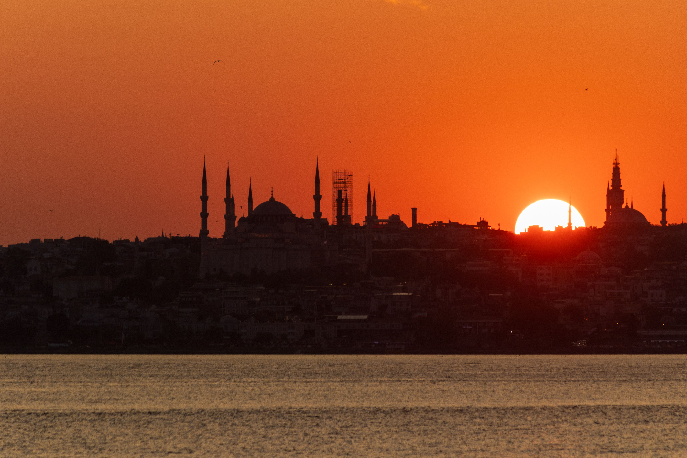
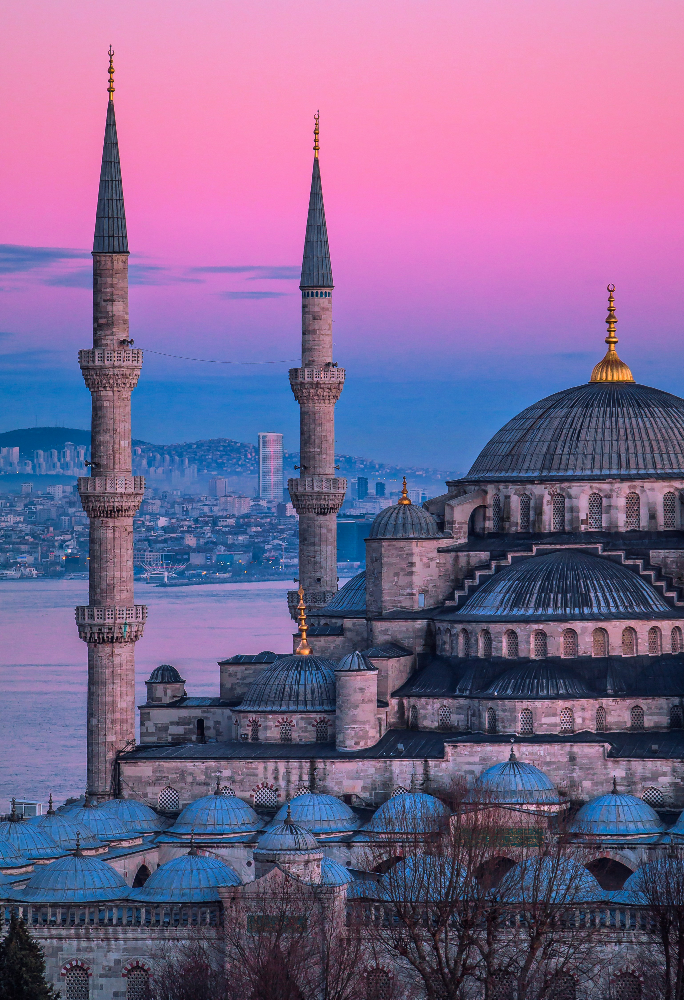
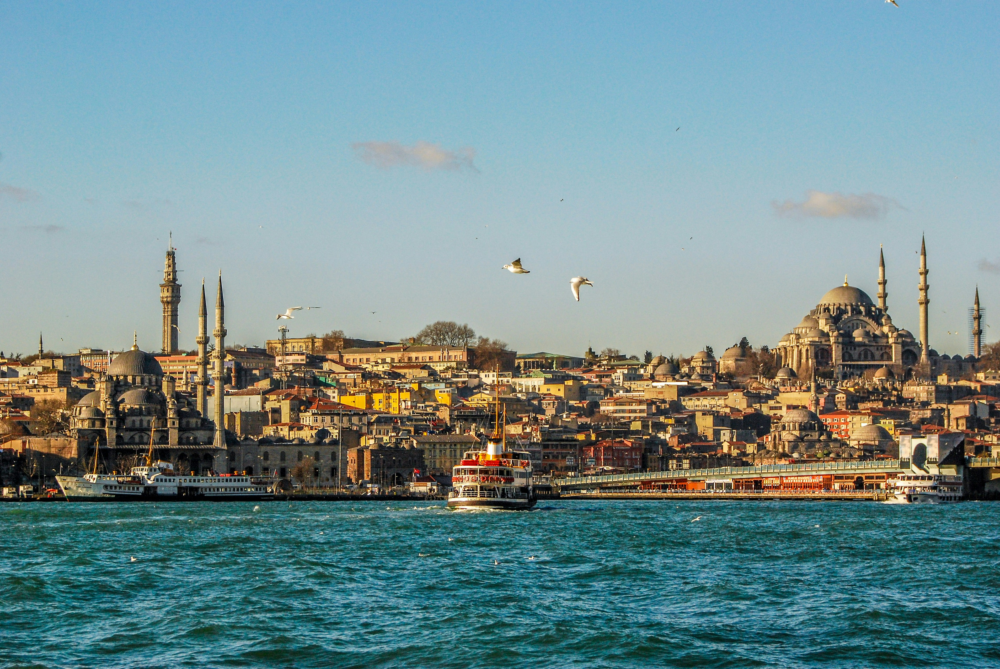
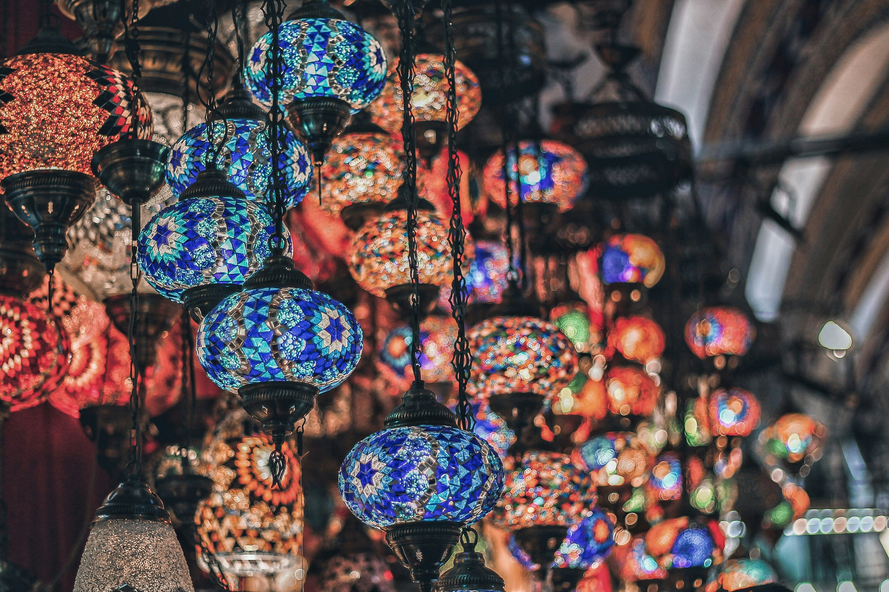
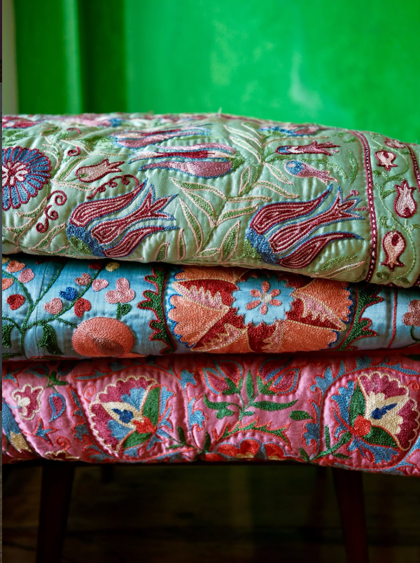
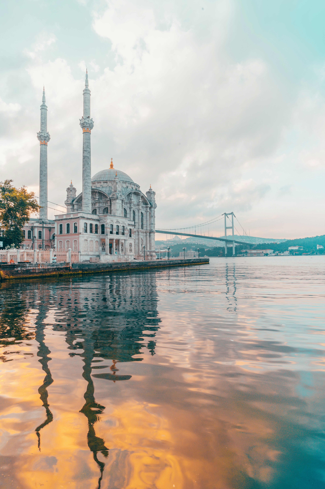
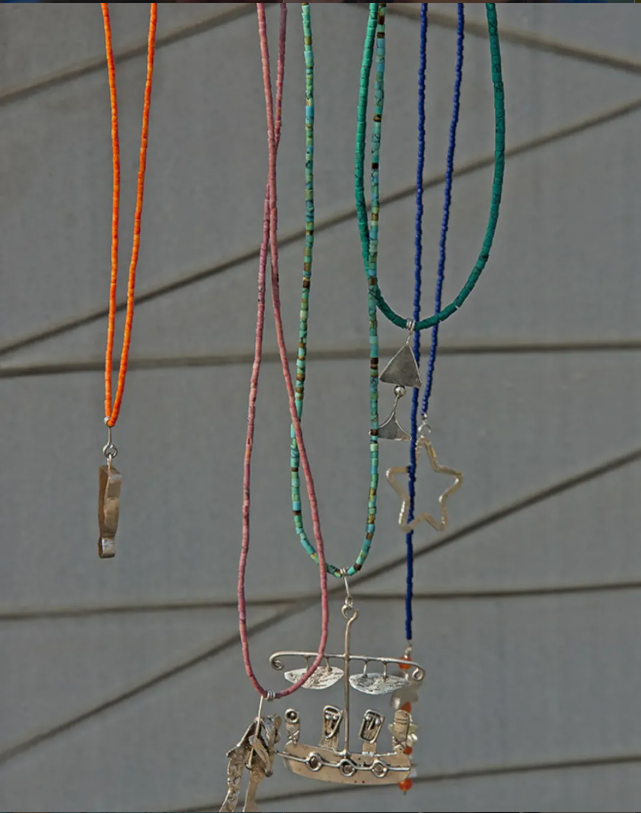

hotel
Istanbul Midpoint
Aksaray · Fatih. Comodo per T1, Marmaray e per raggiungere rapidamente la città storica.
↗ MapsLa guida è pensata per essere usata dal telefono: programma di base, alternative e indirizzi sono separati, così ognuno può scegliere senza dover seguire un itinerario rigido.
Aksaray · Fatih. Comodo per T1, Marmaray e per raggiungere rapidamente la città storica.
↗ MapsLa soluzione più pratica per tram, metro, Marmaray, bus e traghetti. Per il gruppo è utile avere una carta pronta già per il primo giorno.
↗ sitoTaxi ufficiale (~1.600 - 2.200 TL) o transfer privato (~40€-60€). Durata tragitto verso Aksaray: 60-80 minuti.
| Luogo | Che cos'è | Zona | Perché andarci |
|---|---|---|---|
| Santa Sofia | monumento / ex basilica e moschea | Sultanahmet | Il grande punto di partenza della città storica. |
| Moschea di Süleymaniye | grande moschea ottomana | Suleymaniye / Fatih | Maestosa, meno caotica e con vista straordinaria sul Corno d'Oro. |
| Cisterna Basilica | cisterna sotterranea bizantina | Sultanahmet | Visita breve e molto scenografica. |
| Moschea Blu | moschea ottomana | Sultanahmet | Da abbinare naturalmente a Santa Sofia. |
| Arasta Bazaar | piccolo bazaar di negozi | Sultanahmet | Più raccolto del Grand Bazaar, utile per una passeggiata. |
| Eminönü | quartiere / nodo di trasporti | Corno d'Oro | Mercato delle Spezie, traghetti e balık ekmek. |
| Karaköy · Tophane · Galata | quartieri e waterfront | Beyoğlu | Gallerie, caffè, design, Torre di Galata e ristorantini. |
| İstiklal Caddesi | via pedonale iconica | Beyoğlu | La passeggiata da Piazza Taksim giù fino alla Torre di Galata. |
| Beşiktaş | quartiere storico e giovanile | Besiktas | Atmosfera vivace, caffè lungo il Bosforo e vita di quartiere. |
| Çukurcuma | quartiere di antiquari e design | Beyoğlu | Interessante se piacciono antiquariato e oggetti d'autore. |
| Topkapı | palazzo ottomano | Sultanahmet | Padiglioni, collezioni e vista sul Bosforo. |
| Grand Bazaar | grande mercato coperto storico | Beyazıt | Gioielli, tessili, ceramiche, tappeti e botteghe. |
| Nişantaşı | quartiere residenziale e dello shopping | Şişli | Moda, ristoranti e design contemporaneo. |
| Kadıköy & Moda | quartieri sulla sponda asiatica | Asia | Mercato, botteghe, caffè e la risalita verso Moda. |
| Kumkapı | quartiere storico sul Mar di Marmara | Fatih | Pesce, meyhane e una forte storia armena; è famoso soprattutto la sera. |




Check-out e trasferimento a Sabiha Gökçen (SAW). Il traffico può incidere molto sui tempi, quindi qui conviene essere più prudenti con l'orario.
Una selezione ragionata per zona e occasione: dai ristoranti più importanti alle piccole lokanta, fino a indirizzi vegetariani e vegani. Non serve prenotare tutto: alcune funzionano proprio meglio con un approccio spontaneo.
Lokanta molto amata dai locali, con classici turchi e piatti dell'Anatolia. Buona opzione per un pranzo informale.
Ricette regionali e meno comuni dell'Anatolia, con piatti che cambiano e una forte attenzione alla tradizione locale.
Ristorante noto per kebab e mezze, con terrazza affacciata sul Corno d'Oro. Comodo da abbinare al Bazar delle Spezie.
Piccolo ristorante tutto vegano che propone piatti ispirati alla cucina turca e comfort food vegetale. Buona alternativa se nel gruppo qualcuno vuole mangiare senza carne, latticini o uova.
Una esnaf lokantası, cioè una trattoria semplice frequentata soprattutto da chi lavora in zona. Si scelgono i piatti del giorno dal banco: utile per mangiare turco senza impostare un pranzo “importante”.
Una selezione ragionata di indirizzi dove cercare oggetti contemporanei, artigianato turco e gioielli di ricerca. Niente alta gioielleria come focus: qui contano design, materiali e carattere.

Un punto di riferimento per artigianato turco, ceramiche, tessili, cuscini, tappeti vintage e oggetti per la casa.

Atelier di ceramiche d'autore. Per la visita è opportuno scrivere in anticipo.

Spazio tra antiquariato e interior design nel cuore di Çukurcuma, quartiere di ricercate botteghe d'arte e oggetti unici.

Grande spazio dedicato al design contemporaneo ispirato alla tradizione turca: tessili, casa, oggetti e gioielli artigianali.

Teli pestemal tradizionali, asciugamani e tessuti in cotone biologico, lino e seta tessuti con telai storici.

Atelier di gioielli e accessori dal design contemporaneo e forte personalità, situato nel quartiere di Nişantaşı.
Indicazioni generali per orientarsi in città, usare i trasporti e comprendere i termini locali più comuni.
Molto utile per spostarsi rapidamente tra Aksaray, Sultanahmet, Eminönü e Karaköy.
Il collegamento ferroviario sotterraneo che unisce la parte europea e quella asiatica in pochi minuti.
Il modo migliore per vivere la città: unisce gli spostamenti a una vera e propria minicrociera sullo Stretto.
Il percorso della maratona attraversa il Bosforo e arriva a Sultanahmet. Le chiusure stradali temporanee possono rallentare i veicoli nel centro: meglio affidarsi a piedi, tram e Marmaray.
↗ sito ufficialePer il ritorno a Sabiha Gökçen, calcolare sempre un margine ampio per il traffico intenso che caratterizza gli spostamenti verso la periferia asiatica.